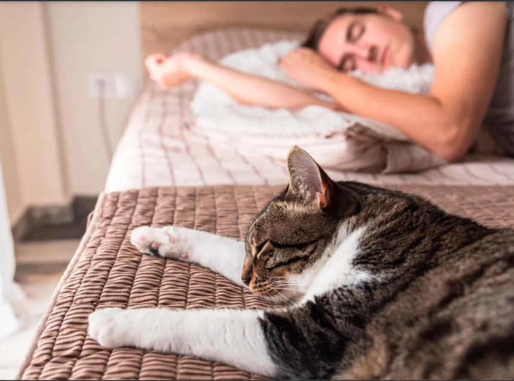
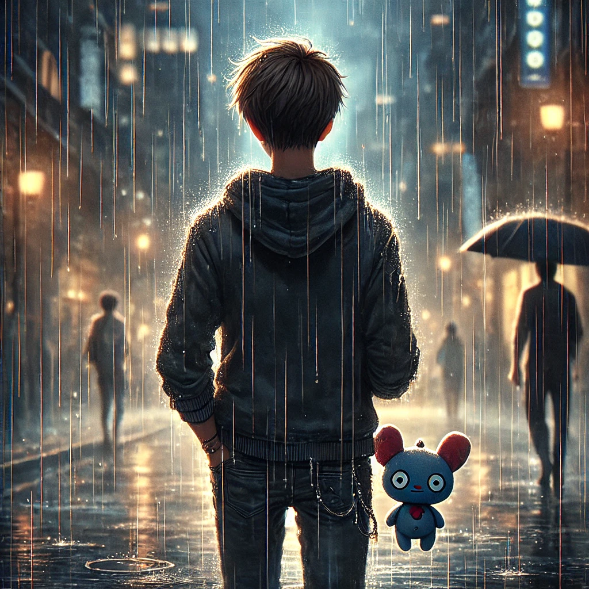

Es un gusto tomar café de vez en cuando, es relajante.

Dormir
Por no decir que es mi pasatiempo favorito.
Jugar Videojuegos
Una buena distracción de todo.
Mirar Series
Otra manera de distraerse y entretenerse.

Caminar bajo la Lluvia
Desestresante y bonito.
Lista de Pasatimepos
Tomar un café en cualquier momento, ya sea bueno o malo, es muy relajante. Siempre será delicioso y es uno de mis pasatiempos donde puedo estar tranquilo y relajado.
Echarme una siesta o incluso dormir es algo que considero un pasatiempo. Es muy bonito y relajante poder escaparte de la realidad a un mundo de sueños y descanso.
Jugar videojuegos es otro de mis pasatiempos favoritos, ya que es emocionante y muy distraído, especialmente si es con amigos. Es divertido estar rodeado de personas que te entienden, incluso si es virtualmente.
Ver series es un pasatiempo que no suelo hacer mucho, ya que no hay tiempo suficiente. Sin embargo, cuando puedo, es interesante dependiendo de la serie que esté viendo, sea romance, misterio o acción. Es más entretenido si tengo comida.
Este es un pasatiempo que no puedo practicar muchas veces, ya que no siempre llueve. Pero cuando tengo la oportunidad, caminar bajo la lluvia es uno de mis pasatiempos favoritos. Me relaja y es un buen clima para pensar y reflexionar. Es bonito caminar bajo la lluvia, al menos para mí.